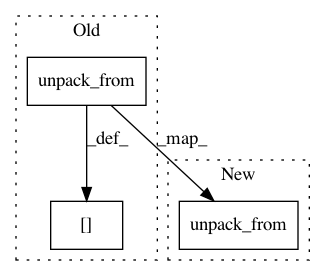

5c6d6f5b99a6a2e7f43b90082d91460965617d98,spynnaker/pyNN/models/spike_source/spike_source_poisson_machine_vertex.py,SpikeSourcePoissonMachineVertex,read_parameters_from_machine,#SpikeSourcePoissonMachineVertex#Any#Any#Any#,637
Before Change
seed_array = transceiver.read_memory(
placement.x, placement.y, poisson_params + self.SEED_OFFSET_BYTES,
self.SEED_SIZE_BYTES)
self.__kiss_seed[vertex_slice] = struct.unpack_from("<4I", seed_array)
// locate SDRAM address where the rates are stored
poisson_rate_region_sdram_address = (
self.poisson_rate_region_address(placement, transceiver))
After Change
placement.x, placement.y, poisson_params + self.SEED_OFFSET_BYTES,
self.SEED_SIZE_BYTES)
self._app_vertex.update_kiss_seed(
vertex_slice, struct.unpack_from("<4I", seed_array))
// locate SDRAM address where the rates are stored
poisson_rate_region_sdram_address = (
In pattern: SUPERPATTERN
Frequency: 3
Non-data size: 3
Instances
Project Name: SpiNNakerManchester/sPyNNaker
Commit Name: 5c6d6f5b99a6a2e7f43b90082d91460965617d98
Time: 2020-11-16
Author: alan.barry.stokes@gmail.com
File Name: spynnaker/pyNN/models/spike_source/spike_source_poisson_machine_vertex.py
Class Name: SpikeSourcePoissonMachineVertex
Method Name: read_parameters_from_machine
Project Name: ekzhu/datasketch
Commit Name: b9efa820314c6c3dd3f1a1e4f8c7adc683340913
Time: 2016-01-19
Author: erkangzhu@gmail.com
File Name: datasketch/hyperloglog.py
Class Name: HyperLogLog
Method Name: __setstate__
Project Name: ekzhu/datasketch
Commit Name: b9efa820314c6c3dd3f1a1e4f8c7adc683340913
Time: 2016-01-19
Author: erkangzhu@gmail.com
File Name: datasketch/hyperloglog.py
Class Name: HyperLogLog
Method Name: deserialize